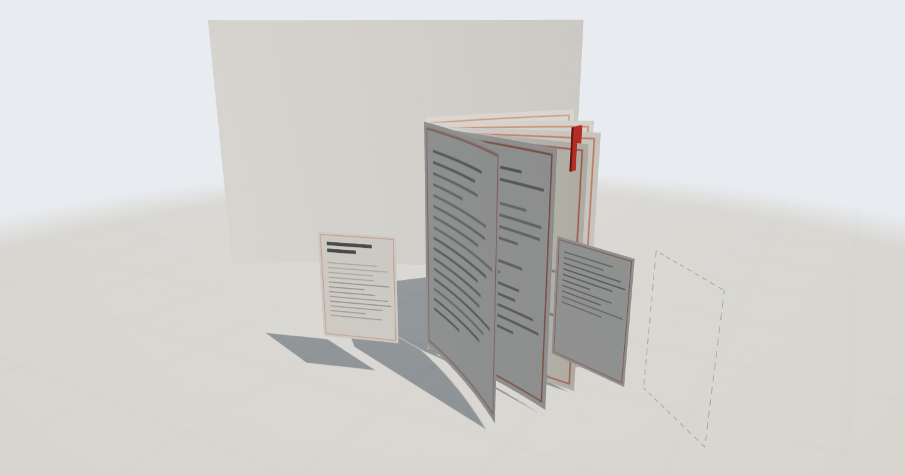
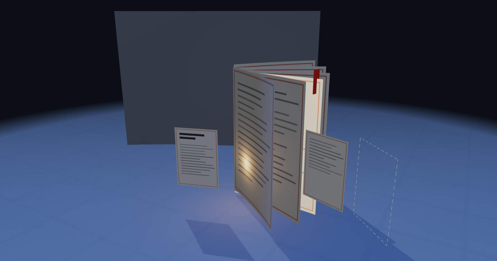

NANMU 的博客 · 一个正在写的发光的书
发光的是最新一篇 · 虚线页是还在计划的日报
今年上半年,我做过一个功能很多的博客,十二周半之后烂尾收场。这次重开,就从那段历史里长出来——先把最小的东西做完、上线、能用。
虚构内容,仅用于排版评审——多篇文章时列表的节奏、分隔线与摘要比对。
虚构内容,仅用于排版评审。
全部文章 →
查看日报栏目(含夹具样张)→
nanmu.xyz/rss.xml
nanmu.xyz/digest.xml